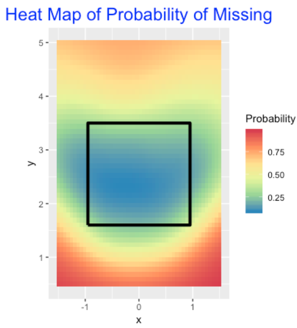

Swing and Miss
1 Introduction
This is a collection of blog posts from Exploring Baseball Data With R that focus on statistics related to the batting outcome “swing and miss”. (In my review, I was surprised that I had written so many posts on this general topic.). These posts are arranged in the chronological order that they were written.
Section 2 proposes a model-based method (based on logistic regression) of measuring a pitcher’s ability to induce a swing and miss on a pitch. Section 3 explores contact rates of hitters during the 2015 World Series. To get a better understanding of contact rates, Section 4 does a historical studies of team contact rates for the seasons 2007 through 2016.
On important type of contact is getting a foul on a two-strike count. Section 5 explores the average number of fouls on two-strikes for hitters during the 2015 season. Section 6 revisits swing and miss statistics for the 2016 World Series including a look at the corresponding pitch locations about the zone.
Section 7 looks at swing rates from a modeling perspective. Random effects models are used to measure the variation between batters in swing and miss rates. Section 8 explores the first-pitch strike rates and swing and miss rates for pitchers reported on the FanGraphs web site. We see from this study that these measures are helpful in understanding the effectiveness of a pitcher.
Section 9 looks at the relationship between whiff (swing and miss) rates and strikeout rates for hitters and pitchers. We also look how the whiff rates depend on the pitch type. Section 10 revisits this topic for the 2017 World Series players. 50% swing contours are seen to be helpful in distinguish swing zones for players. These type of rates are also explored in Section 11 for 2018 regulars and World Series players in the 2018 season. Count and pitch effects are considered for swinging and missing
Section 12 is a tribute to the great player Joe Mauer, focusing on the use of measures to understand his great plate discipline
Section 13 focuses on the use of the CalledStrike package to visualize a variety of measures such as swing and miss rates over the zone. This package is especially helpful in comparing the swing characteristics of different hitters. One way of exhibiting plate discipline is to have a streak of swings where the player does not whiff at the pitch. Section 14 looks these particular accomplishments from a historical perspective and finds one remarkable hitter who had a sequence of 87 swings without a whiff.
2 A New Swing and Miss Stat
Watching the 2015 playoffs, one has to be impressed (from the pitcher’s perspective) with the number of pitches that are swung and missed. That raises the question: what is a reasonable way to measure a pitcher’s ability to induce a miss on a batting swing? One could simply report the fraction of swings that are missed – for example, the TBS announcer reported that batters missed 31% of Clayton Kershaw pitches which seems like a large percentage. But that raises several questions
Any given pitcher has specific pitches (I’m thinking of off-speed pitches) that are more likely to result in a swing and miss. So maybe we should focus on the misses on particular types of pitches. Also it would seem that a batter’s propensity to miss a pitch would depend on the pitch’s location. Many of the misses that I saw in last night’s game between the Mets and Dodgers were sliders and changeups that were thrown near the ground.
This brief study will attempt to add some extra insight to the basic “fraction of missing pitch with the swing” statistic and compare four of the great playoff starters using this statistic.
From the pitchFX data, I collect the pitcher name, the pitch type, the destination of the pitch (variable des) and the pitch location (variables px and pz). For a particular pitcher and particular pitch, I restrict attention to only the batter swings. For this filtered data, I record two new variables:
- Outcome = 1 if the batter misses the pitch, and Outcome = 0 otherwise
- Distance – the distance of the pitch from the center of the strike zone
For this data (specific pitcher and pitch), I fit the logistic model \[ p = \frac{\exp(a + b \times DISTANCE)}{1 + \exp(a + b \times DISTANCE)} \] Here \(p\) is the probability the batter misses the pitch, and the variables \(a\) and \(b\) give the intercept and slope of the logistic fit.
I fit this logistic model to four playoff pitchers Clayton Kershaw, Zack Greinke, Jake Arrieta, and Dallas Keuchel using a large group of 2015 pitchFX data. For a fair comparison, I am looking at only sliders thrown by the four pitchers. The following table shows (for the sliders) the number of swings, the number of misses, and estimates of the quantities a and b from the logistic model.
Clayton Kershaw Zack Greinke Jake Arrieta Dallas Keuchel
N_Swings 415.00 288.00 476.00 256.00
N_Misses 186.00 103.00 116.00 97.00
(Intercept) -2.72 -3.77 -3.08 -4.80
Distance 2.45 2.78 2.13 3.04In the figure below, I summarize these four logistic fits by plotting the probability of a miss as a function of the distance from the center of the strike zone.
Here’s how to interpret the logistic fit for a specific pitcher.
If we plug in the value DISTANCE = 0 into our logistic fit, we get an estimate of the logit of the probability a batter misses a slider thrown in the middle of the plate. One has to convert the logit to a probability. For Kershaw, the intercept estimate is -2.72. So the probability a batter misses a slider in the middle of the plate is \(p = \exp(-2.72) / (1 + \exp(-2.72)) = 0.06\). This is a poorly located slider – batters tend not to miss these pitches. It is more helpful to look at the fits for pitches thrown away from the middle of the plate. For example, if a pitch is a foot away from the center, DISTANCE = 1, and the probability of missing is estimated by \(\exp(-2.72 + 2.45) / (1 + \exp(-2.72 + 2.45)) = .43.\) The value of the slope tells us the importance of pitch location. For Kershaw, the slope estimate is 2.45. There is a useful “divide by four” interpretation for a slope in a logistic model. For every additional foot the pitch is from the center of the player, the probability the batter misses the pitch is increased by the “slope divided by 4” or 2.45 / 4 = 0.61. This is a large change in probability, emphasizing the importance of throwing the pitch in a good location.
Comparing the four pitchers …
- Clearly Kershaw has the best slider – for any distance from the middle of the plate, the batter is more likely to miss the pitch. Also it is clear that Kuechel has the worst slider from the viewpoint of getting the batter to miss the swing.
- There is an interesting comparison between Greinke and Arrieta. The two pitchers are similar with respect to pitches thrown within a foot of the center of the strike zone. But Greinke appears to be better in getting the batter to miss the pitches thrown, say two feet away from the middle of the plate. (Grinch’s “slope” is greater than Arrieta’s “slope”.)
As I am sure someone has said, the three most important aspects of pitching are location, location, and location, and this brief analysis illustrates this truth for pitching. There is a lot more that can be said using this new pitching measure and I have a group of Bowling Green State University students in the ACTION program exploring swing-and-missing in various ways.
3 World Series Swing and Miss Rates
In the 2015 World Series, the Fox announcers are making a big deal that the Royals are better contact hitters than the Mets. What does that mean? One interpretation is that the Royals are less likely to miss a pitch (a whiff or swinging strike) in a swing. That raises the obvious question: Are the Royals hitters more likely to whiff on a swing than the Mets hitters in this Series?
This question is easy to address from the PitchFX data. Here’s what I did.
- Using Carson’s PitchRx package, I downloaded the PitchFX data for the first four games of the World Series.
- For all hitters, I collected the number of swings, the number of “swinging strikes”, and computed the fraction of whiffs.
- I want to only include hitters who play regularly (not pitchers), so I looked only at the hitters who have had at least 10 swings during the series.
- In the following graph, I use a Cleveland-style dot plot to graph the whiff rates (number of misses divided by the number of swings) for these batters with at least 10 swings, color coding the dots by the team.
What do we see?
- First we see much variation in these whiff rates from Mike Moustakas (only 1 whiff in 35 swings for a 3% rate) to Kendrys Morales (7 whiffs in 17 swings for a whiff rate exceeding 40%).
- Comparing the two teams, the whiff rates are pretty comparable. For example, of the five highest whiff rates, 3 are Mets and 2 are Royals players.
- This does not mean that the Royals are not better contact hitters since a “swing and miss” is a function of the hitter and the pitcher. It is very possible that the Mets pitchers are better in inducing swinging strikes (the Mets pitchers have higher strikeout rates, for example), and so the Royals better ability to make contact is mitigated by the Mets’ pitching.
4 Historical Contact Rates
I have a group of Bowling Green students who have been studying “swing and miss” data from the recent season. That motivated me to see how contact rates (proportion of all swings that make some contact with the ball) have changed over the 10 seasons including 2016.
I’ve displayed parallel boxplots of team contact rates below. (I used Fangraphs data that is easily downloadable as a cvs file.) The box contains the middle 50%, the “whiskers” go to the extremes, and unusual rates (found by a standard rule for flagging outliers) are indicated by individual points.

I expected contact rates to decrease in recent years due to the rise in strikeouts, but the drop in the 2016 season is noticeable. (The Rays have made contact with less than 72% of their swings this season.) Perhaps there is a cold weather effect where the pitcher has an advantage? I think there needs to be a proper balance in baseball where the pitchers or batters don’t seem to have too much of an advantage.
It will be interesting to see if this pattern continues the rest of the season.
5 Fouls with Two Strikes
In recent posts, I have looked at pitch count transitions for hitters and pitchers. Here I will focus on one particular pitch count transition that looks interesting and may be helpful for measuring batter ability.
Here are the counts of the different transitions for the 2015 Mike Trout (recall the state X refers to the end of the plate appearance which could be a SO, BB, or a ball in play.)
0-0 0-1 1-0 0-2 1-1 2-0 1-2 2-1 3-0 2-2 3-1 3-2 X
0-0 0 361 294 0 0 0 0 0 0 0 0 0 27
0-1 0 0 0 139 162 0 0 0 0 0 0 0 60
1-0 0 0 0 0 130 125 0 0 0 0 0 0 39
0-2 0 0 0 29 0 0 96 0 0 0 0 0 43
1-1 0 0 0 0 0 0 133 115 0 0 0 0 44
2-0 0 0 0 0 0 0 0 57 55 0 0 0 13
1-2 0 0 0 0 0 0 53 0 0 139 0 0 90
2-1 0 0 0 0 0 0 0 0 0 79 50 0 43
3-0 0 0 0 0 0 0 0 0 0 0 26 0 29
2-2 0 0 0 0 0 0 0 0 0 64 0 108 110
3-1 0 0 0 0 0 0 0 0 0 0 0 33 43
3-2 0 0 0 0 0 0 0 0 0 0 0 49 141
X 0 0 0 0 0 0 0 0 0 0 0 0 0When one watches a plate appearance, one notes the tendency of a batter to extend the PA by fouling off pitches. Down by two strikes, the batter will sometimes foul off a number of pitches. This seems to be desirable from a batter’s perspective. It lengthens the pitch count, the batter sees more pitches and is more likely to make good contact on the next pitch, etc. Looking at Trout’s table, let’s focus on the foul balls with two strikes which correspond to the transitions from “0-2” to “0-2”, “1-2” to “1-2”, “2-2” to “2-2”, and “3-2” to “3-2”. We see that Trout had 29 + 53 + 64 + 49 = 195 of these two-strike foul balls in 2015.
Creating a useful statistic, Trout had 195 2-strike foul balls in 682 plate appearances, so his average number of 2-strike foul balls (per plate appearance) was 195 / 682 = 0.286.
To see if Trout’s foul average is unusually low or high, we computed this statistic for all 2015 players with at least 400 PA. Below, I show the hitters where this foul average was .3 or higher, and the hitters who had a foul average of .2 or lower.
Some comments from looking at these high and low graphs:
- We see that Victor Martinez was the foul average leader in 2015 and Andrelton Simmons was at the bottom with respect to this statistic.
- Being a Phillies fan, it is a bit remarkable to find a statistic where two of the top six are Phillies – Odubel Herrera and Freddy Galvis. Actually, I did see a recent Phillies game where the commentator commented on Herrara’s ability to stay in the count with a foul hit.
- Looking at the list of low foul averages, it seems that many light-hitting players are on this list such as Andrelton Simmons, Ben Revere and Billy Hamilton. I am a bit surprised that Buster Posey is on this low foul average list.
- Note that I am computing the average number of fouls on two-strike counts. Other statistics could be computed; for example, I also looked at the fraction of PA’s where there was at least one foul on a two-strike count. My sense is that you would have a similar list of top and bottom batters using this fraction statistic.
- From a statistical perspective, I guess I am more interested in the significance of these values. Is a foul average a batting skill which is related to other batting measures? Can one accurately predict one’s 2-strike foul average in the next season using this season’s data? Given that the length of a PA is considered to be a batter skill, I would think that a 2-strike foul average would behave in a similar fashion. This recent fangraphs article asks if foul balls are a skill.
- Generally, it would be interesting to look more carefully about usefulness of foul data to learn more about the abilities of batters and pitchers.
6 WS Game 3 - Swing and Miss
6.1 Introduction
It was an exciting pitchers’ duel in the third game of the World Series. Yesterday, my ACTION freshmen research group did a great job in presenting work on “swing and miss” data. To recognize their accomplishment, it seemed appropriate to analyze last night’s game from a “swing and miss” perspective.
6.2 Basic Swing and Miss Stats
First, how often did batters swing at pitches, how often did they miss the pitch, and did the percentage differ between the two teams?
Team N Miss Pct
--------------------------
1 Cubs 66 22 33
2 Tribe 60 19 32We see that the Cubs missed 22 out of 66 swings, the Indians 19 out of 60, and so they were very similar – both teams tended to miss about 1/3 of their swings.
6.3 Different Pitch Types?
Next, we explore the effect of the pitch type. Since a large number of pitch types were thrown, we classify them into fast (“FC”, “FF”, “FT”, “SI”) or slow (“CH”, “CU”, “KC”, “SL”) and see how the swings and misses varied between slow and fast pitches for each team.
Team Type N Miss Pct
--------------------------------
1 Cubs fast 44 9 20
2 Cubs slow 22 13 59
3 Tribe fast 33 12 36
4 Tribe slow 27 7 26This is an interesting pattern and deserves a graph.
In this game, the Cubs appeared to be more susceptible to off-speed pitches – they missed 59% of them compared to only 26% for the Indians. The Tribe missed a larger percentage of fastballs.
6.4 Pitch Location?
Let’s look at the location of these pitches that were swung at. I use color to distinguish the type of pitch (fast or slow) and use the size of the point to indicate if the batter missed the pitch (yes is large).
As one might anticipate, batters tend to miss the low off-speed pitches and the high fastballs.
6.5 Special Point in the Graph?
You may have noticed that I have colored one special point purple. This is the last pitch in the game where Javier Baez missed a high fastball (really out of the zone) thrown by Cody Allen.
6.6 R Code?
The complete R script that I used to produce this work can be found on my gist site. The pitchRx package was used to download the pitchFX data.
6.7 Game 4 Update (Added Sunday Morning)
After watching Game 4 last night, I wondered if the Cubs pattern of swinging and missing at slow pitches out of the zone was continuing. Combining the results from the two games, the Cubs have missed 25 out of 68 swings at off-speed pitches (37%) contrasted with missing 12 out of 72 swings at fast balls (17%). In contrast, the Indians have missed 11 out of swings on 44 off-speed pitches (25%) and 20 out of swings on 86 fastballs (23%). Yeah, the Cubs have been susceptible to off-speed pitches. Here’s a new graph showing the locations of swings and misses of the two teams in Games 3 and 4.
7 Modeling Swing Rates
7.1 Mixed Models
Recently I have been exploring hitter swing rates as reported in the “Plate Discipline” section of their Batting Leaders – for example, here is the page for 2016 leaders. Also a reader recently asked for clarification on the mixed models approach taken, for example, in this Baseball Prospectus article by Judge et al. I see this as an opportunity to explain the use of these models for a simple example. I’ll illustrate the use of a binomial/beta model, and then discuss an alternative method on logits that leads to more sophisticated modeling as described in the Judge et al post.
7.2 Why Look at Swing Rates?
I think the point of the “plate discipline” section of Fangraphs is to dig deeper into the strikeout (SO) and walk (BB) outcomes. Why are batters striking out at such a high rate? Why are some hitters such as Joey Votto good in drawing walks? Since they are measuring swing rates for pitches thrown inside or outside of the zone, this suggests that some hitters may be chasing too many pitches outside of the zone.
If you glance at the swing rates in Fangraphs, you will see a lot of variation between the hitters – some batters tend to be free-swingers and other batters are reluctant to swing. But there several problems in making sense of these swing rates. First, these are observed rates based on sample sizes that are not given. What conclusions can we draw about the “true” swing rates or swing probabilities? Second, since pitchers have a lot to do with batters’ swings, how much of the variability in swing rates is due to the variation between pitchers compared to the variation between hitters? Mixed models or random-effects models are helpful for addressing these questions.
7.3 A Simple Random Effects Model
Here is a binomial/beta mixed model that I have talked about before in the context of Efron and Morris’ example of batting averages. Suppose we collect the number of swings and number of pitches for each batter in the 2016 season. (I collect this data using the PitchFX system – the FanGraphs data does not provide the sample sizes.) We assume that \(y_i\), the number of swings of the \(i\)th batter, is binomial with sample size \(n_i\) and probability of success \(p_i\). We believe the swing probabilities \(p_1, ..., p_N\) come from a beta curve with shape parameters \(a\) and \(b\). This mixed model is simple to fit using my LearnBayes package – I write a short wrapper function that inputs the vector of swing counts, and the vector of sample sizes and the output is the estimate of the beta shape parameters. I apply this fit to the 1103 players who came to bat during the 2016 season. It turns out that the beta shape parameters are \(a\) = 46.5 and \(b\) = 51.1. Here is the fitted beta curve – this represents the distribution of the swing probabilities, that we can call the swing talents.
7.4 An Alternative Mixed Model Based on Logits
There is an alternative mixed model approach that leads to several interesting generalizations. Think of our raw data consisting of two variables, swing (either 1 or 0) and the identity of the batter, batter_name. In my PitchFX dataset, I have data on 718,292 pitches where I collect these two variables. As above, I let \(p\) denote the probability of a swing for a particular observation, and define the logit, logit \(p\) = \(\log(p) - \log(1-p)\). The model says that
\[ logit p = b0 + u_i \]
where \(u_i\) is a coefficient for the ith batter and \(b0\) is an unknown constant. We assume that the \(u_i\) follow a normal distribution with mean 0 and standard deviation \(\sigma\). This is a similar model to the binomial/beta model – in the bb model, we assigned the swing probabilities an unknown beta curve, and here we are assigning the u_i (on the logit scale) a normal curve with unknown standard deviation.
This logit random effects model is also easily fit using the glmer() function from the lme4 package. Here is the basic syntax:
fit <- glmer(Swing ~ (1 | batter_name), family=binomial, data=All_Data)This takes a bit more time to fit (remember we have 718,292 pitches). When you look at the output, you get an intercept estimate of -0.9403 and \(\sigma\) = 0.2025.
On the surface, it looks like we get very different fits, but remember that the bb model is fitting on the probability scale, and here we are fitting on the logit scale. It turns out that both methods can be shown to give essentially the same answer – so the curve above represents the fitted talent curve for swing rates using either model.
7.5 Extending the Logit Model
One attractive feature of this second approach is that it allows for easy generalizations. As said before, the probability of a swing depends both on the identity of the batter and the identity of the pitcher. That raises the interesting question: how much of the variability in the swing rates is due to the batters and how much is due to the pitchers? This logit random effects model (and the use of the glmer function) can be generalized to add random effects for both the batters and the pitchers and we can answer this question from fitting the model.
7.6 The Details
In a future post, I’ll focus more on the coding and show the code for fitting both types of random effects models. These are important models since they really address the “who is better” questions among hitters, and allow us to separate variation into the part that is due to chance, and the part that is due to the differences in player talents. Without some type of analysis like this, one really can’t make sense of the raw percentages reported by the Fangraphs site.
8 First Pitch Strike and Swing and Miss Rate
8.1 Two FanGraph Pitching Stats
In the Pitcher Leaderboard of the Fangraphs site, they have an interesting Plate Discipline tab that provides an interesting collection of contact and swing percentages for all qualifying pitchers for the 2016 season. Let’s focus on exploring two of these statistics:
- F-Strike % – percentage of first pitches that are strikes
- SwStr % - percentage of pitches that are swing and misses
One always hears about the desirability of a first pitch strike for a pitcher. Also it seems clearly desirable (from the pitcher’s perspective) to induce a swing and miss, so one would like SwStr % also to be high.
I downloaded this data for 2016 qualifying pitchers – here is a scatterplot of the two proportions. It is interesting that there is little association in the graph – knowing that a pitcher is good in getting a first-pitch strike doesn’t tell you much about the proportion of swinging strikes.
8.2 Predicting WAR from These Two Stats
A summary measure of a pitcher’s effectiveness during the season is the WAR (wins above replacement) stat. (I know that a WAR doesn’t isolate the pitcher’s effectiveness from the contribution of his defense, but we won’t go down that road here.) I also collected the WAR values from the FanGraphs Value page and merged this with the plate discipline stats. I redraw the scatterplot where the size of the plotting point is proportional to the WAR value.
Since the WAR values seem higher in the upper right section of the plot, this motivates the use of the regression model
WAR = a + b1 First_Pitch_Strike_Proportion + b2 Proportion_Swinging_Strikes
that is easy to fit using the lm function:
fit <- lm(WAR ~ F_Strike + SwStr, data=d2)I display the fit on the scatterplot by showing lines where the predicted WAR is equal to 0, 2, 4, and 6.
8.3 Looking at Residuals
For particular pitchers, this model does a great job in explaining R – here is a list of the pitchers whose absolute residual was smaller than 0.1.
Name F_Strike SwStr WAR Residual
1 Cole Hamels 0.576 0.122 3.0 -0.029145560
2 Max Scherzer 0.651 0.153 5.6 0.091603020
3 Ricky Nolasco 0.610 0.092 2.5 -0.009598109
4 Edinson Volquez 0.563 0.085 1.5 0.080470932
5 Chad Bettis 0.627 0.087 2.6 -0.022889175
6 Doug Fister 0.596 0.059 1.1 0.068429141For example, Max Sherzer’s 2016 WAR value of 5.6 is accurately predicted knowing his first strike and swing and miss rates.
8.4 The Big Residuals
Although the regression indicates that both first pitch strike and swing and miss are helpful in explaining the variation in WAR values, it is interesting to find pitchers who succeed (or failure) despite their first pitch strike and/or swing and miss proportions. Let’s first locate the residuals that are larger than 2 – these points correspond to pitchers who do much better (from a WAR perspective) than predicted from their first pitch strike and swing and miss rates. I indicate those with a + on the scatterplot.

These two pitchers, Rick Porcello and Jose Quintana, have above-average first pitch strike rates, but below-average swing and miss rates. Of course we know Porcello had a great 2016 season – finished with a 22-3 record and a Cy Young crown. Why was he successful? Here’s an interesting quote from an ESPN article:
“Porcello’s most common explanation for last season’s breakthrough is that he better understands what makes him effective. In 2015, he strayed from his signature sinker in an attempt to strike out more hitters with his relatively ordinary four-seam fastball. Last year, he got back to throwing the ant-killing sinker that induces so many weak ground balls.”
Next, we find the residuals smaller than -2 – these pitchers underperform (with respect to WAR) given their first pitch strike and swing and miss rates.
Here are the five pitchers:
Name F_Strike SwStr WAR Residual
1 Michael Pineda 0.673 0.141 3.2 -2.248726
2 Josh Tomlin 0.677 0.074 1.0 -2.019739
3 Jered Weaver 0.642 0.081 -0.2 -2.863600
4 James Shields 0.547 0.092 -0.9 -2.298488
5 R.A. Dickey 0.621 0.106 1.0 -2.225892Michael Pineda was great with respect to first-pitch strikes and swing and misses, but he had an average WAR value, suggesting some problems. This article examines the locations and movements of his pitches in the 2016 season.
It is interesting that Jered Weaver had similar first-pitch strike and swing and miss rates as Rick Porcello, but Weaver’s WAR value was actually negative. A quick look at his pitching statistics suggests that he left two many pitches over the middle of the plate, allowing 37 home runs in 2016.
8.5 Wrap-Up
This brief exploration shows that first-pitch strike and swing and miss rates are important stats to consider when one looks at a pitcher’s effectiveness. These two rates, by themselves, explain about 50 percent of the variability in WAR values. But, as the exploration of residuals indicates, there are other factors to consider. Pitchers can be effective in inducing groundballs or flyballs for outs. Or location problems can doom pitchers who look good relative to first-pitch strikes and swing and misses.
9 Exploring Whiff Rates
9.1 Introduction and Data Source
Baseball Savant provides a “Statcast Search” page where one can query the MLB Statcast Database and get interesting datasets, each that can be downloaded as a csv file and easily imported into R. Using this page, I downloaded four files:
- By using Player Type = Batter, and Pitch Type = Fastballs, I downloaded summary data on fastballs for all hitters up to the last game in the 2017 season
- By using Player Type = Pitcher and Pitch Type = Fastballs, I downloaded summary data for fastballs for all 2017 pitchers
- I repeated the above two queries using Pitch Type = Offspeed, for Batters, and then for Pitchers
I also downloaded Standard Measures for batters and pitchers from Fangraphs.
By merging these datasets, I get two data frames, one for batters and one for pitchers, that I’ll use to explore whiff rates, where a whiff rate = # of whiffs / # of swings. (The relevant variables in the StatCast csv file are swings and whiffs.)
9.2 Batter Whiff and K Rates
The first observation is that a batter’s whiff rate is strongly associated with his strikeout rate. Here I construct a plot of whiff rates and K rates. There are four hitters, Chris Davis, Keon Broxton, Miguel Sano, and Joel Gallo with unusually high K rates over 35%. On the other end, Dustin Pedroia has the smallest whiff rate and K rate among hitters who have faced at least 500 pitches.
9.3 Pitcher Whiff and K Rates
A similar pattern of association between whiff rate and K rage is true for pitchers. In the scatterplot, five pitchers stand out on the high end and four pitchers are unusually low in their ability to get whiffs and strike out batters.
9.4 How Does Whiff Rate Depend on the Pitch (Batter View)?
Okay, what variables are associated with whiff rates? In watching a lot of baseball, it seems that off-speed pitches are often used to strikeout hitters. So I would think that batters would have higher whiff rates on off-speed pitches than fastballs. This motivates the definition of the difference
Difference = Whiff Rate on Offspeed Pitches - Whiff Rate on Fastballs
In the scatterplot below, I plot the batter’s whiff rate against this difference. What do we see?
- As expected, practically all hitters fall above the line Difference = 0, indicating that they do have higher K rates on off-speed pitches.
- But there are two interesting outliers – Scott Schebler and Corey Dickerson – who actually miss a greater fraction of fastballs than off-speed pitches.
- I’ve label two high K guys (Gallo and Broxton) and three high Difference guys Cesar Hernandez, Alex Gordon, and Aaron Hicks. Hernandez, Gordon, and Hicks appear to perform poorly on off-speed (relative to fastballs), although I am just looking at the whiff rates.
9.5 How Does Whiff Rate Depend on the Pitch (Pitcher View)?
A similar type of graph can be produced for pitchers. Practically all pitchers (Jake Odorizzi is a notable exception) get higher whiff rates at offspeed pitches than fastballs. Luis Perdomo is notable in that his whiff rate on offspeed pitches is over 0.35 higher than the whiff rate on fastballs. Clayton Kershaw and Corey Kluber have similar difference values, but Kluber is higher than Kershaw on whiff rate. Jacob deGrom has a high whiff rate but he does about the same on offspeed and fastball pitches.
9.6 Why Does This Matter?
I imagine that MLB teams have this information about batters and this information could impact strategy – that is, how pitchers will throw to batters. To see if this is generally true, I have graphed the Difference (whiff rate on offspeed pitches minus whiff rate on fastballs) against the proportion of off-speed pitches thrown to the hitter. There is a slight positive association which means that players with a high difference do tend to get a higher fraction of off-speed pitches. But since the association is not that strong, this tells us that other factors might determine the fraction of off-speed pitches thrown. For example, look at Aaron Hicks, Alex Gordon, and Cesar Hernandez. All three hitters have high difference values indicating that they are much less successful at making contact with off-speed pitches. But Hicks tends to get a “high” fraction of off-speed pitches and Hernandez a “low” fraction. I wonder why.
9.7 Final Thoughts
One purpose of this study is to illustrate the relative ease of accessing the Baseball Savant database which is a window to the new Statcast Data. Given the current increase in strikeouts (currently 21.5% of PAs result in strikeouts), it would seem interesting to understand better the cause of this high percentage. A high whiff rate may mean simply that a hitter cannot make contact with a fastball, or it might mean that the hitter is swinging at an unhittable pitch outside of the strike zone. As usual, more can be done with a careful exploration of this data.
10 World Series Special - Swing and Miss Rates
10.1 Introduction
If you have been watching the 2017 MLB playoff games, it should be obvious is that much of the game is the contest between the pitcher and the batter, and a relatively small portion of the game is devoted to the action on the field such as balls put in play, defense, and running bases. From the batter’s perspective, there are two primary issues: (1) First should the batter swing or take the pitch? (2) If the batter does swing, then he wants to make contact. This motivates the consideration of two rates:
Swing Rate = the percentage of pitches that are swung at Miss Rate = the percentage of swings that are missed completely (the so-called swinging strikes)
These two rates have a lot to do with strikeouts and walks. Players who are reluctant to swing tend to walk more often. Also, players with high swing rates and high miss rates tend to have a high rate of strikeouts.
10.2 The 2017 World Series Teams
How do the players on the Dodgers and the Astros compare with respect to swing and miss rates? Here is a scatterplot of the swing and miss rates (percentages) for the Astros and Dodgers regulars.
Several observations from this scatterplot:
- The Astros (red) tend to have similar swing rates and there is more variability in the Dodger (blue) swing rates. Several Dodgers such as Utley and Barnes are reluctant to swing and other Dodgers such as Bellinger and Seager like to swing.
- With respect to miss rates, there is also more variation among the Dodgers regulars. Utley and Barnes are not likely to miss when they swing and Bellinger has a high miss rate. It is interesting that the five highest miss rates all are Dodgers.
- Jose Altuve has a high swing rate, but he has a low miss rate which partially explains his hitting success. Looking at Swing Locations
Okay we know batters vary with respect to swing rates, but where do they like to swing? The Statcast data contains the (x, y) coordinates for each pitch, and using a generalized additive model, one can estimate the probability of a swing at any pitch location. For each batter, I fit this model and the blue contour lines represent a 50% probability of a swing – points inside the contour have a probability of swing that exceeds 50%. Here are the swing contours for the Dodgers regulars. As one might expect, Barnes and Utley are likely to swing only in a small region inside the zone – in contrast, Bellinger, Seager, Pederson, and Puig are likely to swing in a large region.
Here is a similar graph for the Astros regulars. Note that Beltran and Gattis like to swing at pitches high in the strike zone (didn’t Evan Gattis hit a home run in the ALCS on a high pitch?). Also George Springer has a large swing zone. Jose Altuve appears to like to swing at balls near the center of the zone.

Other Comments
- In modern baseball, I would think that the teams are well-aware of batters’ swinging tendencies. The Dodgers and Astros are among the top teams with respect to analytics and I would think that the coaching staff would be provided graphs such as these to inform the pitchers.
- The data was downloaded as csv files from the Statcast Search page of Baseball Savant. All of the R code for the graphs and the generalized additive modeling is available from my gist site.
11 2018 Swing and Miss Rates
11.1 Introduction
It wasn’t that long ago that folks focused about strikeout rates and walk rates. Since we now have much more data on pitch locations and outcomes, we hear more about swing and miss rates. Here we’ll explore swing and miss rates for 2018 hitters, see how these rates vary by pitch type and count, and use heat maps to explore patterns of these rates about the zone. In general, we define a swing rate as the percentage of pitches that are swung at, and a miss rate is the percentage of swinging strikes among those pitches that are swung at. For point of reference, the overall swing rate in 2018 was 46% and the overall miss rate was 23%.
11.2 Swing and Miss Rates of Regular Hitters
To start, I collect and graph the swing and miss rates for all 2018 hitters who have seen at least 1000 pitches. There is a slight positive trend in the graph indicating that players who have high swing rates tend to have high miss rates. I label some interesting players – Jorge Alfaro had an unusually high swing rate and high miss rate. Joey Gallo, in contrast, had a moderate swing rate but a high miss rate. Mookie Betts, the likely MVP in the American League in 2018, is very low on both rates. Three players, David Fletcher, Joe Panik, and Michael Brantley had miss rates under 10 percent.
11.3 Swing and Miss Rates of 2018 World Series Players
Since we are watching the 2018 World Series, it is interesting to plot the swing and miss rates for the Dodgers (blue) and Red Sox (red). One interesting thing is that the Dodgers tend to have low swing and high miss rates, and the Red Sox tend to have high swing rates and low miss rates. In other words, the Red Sox appear to be more aggressive (high swing rates), and more successful in their swings (low miss rates).
11.4 Swing and Miss Rates for Different Pitch Types
How do these rates depend on the pitch type? Here I graph the rates where each plotted point corresponds to a particular type of pitch. Batters tend to swing at splitters (FS), change ups (CH) and cutters (FC), and are less likely to swing at curve balls (CU). With respect to miss rates, batters are less likely to miss sinkers (SI) and two-seam fastballs (FT) and more likely to miss splitters (FS), sliders (SL), knuckle curves (KC) and curve balls (CU).
11.5 Swing and Miss Rates for Different Counts
How does the count impact swinging and missing? Here I plot the rates for each count where I color the label by the type of count (favoring the pitcher, favoring the batter, or neutral). Generally, batters are more likely to swing at deeper counts – most likely will swing on a full count (3-2). Batters are most likely to miss the pitch on a 0-2 count and less likely on a 3-0 count. Generally the pitcher counts (0-2, 1-2, 2-2) are associated with high swing rates and high miss rates. This makes sense since the pitcher has the advantage and can strike the batter out with a pitch out of the zone.
11.6 Swing and Miss Rates and Pitch Location
How does a batter’s propensity to swing or miss depend on the location of the pitch? I fit a generalized additive model where the outcome is 1 (swing) or 0 (no swing) and the logit of the probability of a swing is a smooth function of the pitch location. Here is a heat map of the fitted probability of swinging. This graph isn’t that exciting – it just says that a batter is most likely to swing in the zone.
I fit a second model where I only consider the pitches where the batter swings and the response is 1 is the batter misses the pitch and 0 otherwise. I fit a GAM where the logit of the probability of miss depends smoothly on the location. This graph is more interesting – it is common to miss low and high pitches (red area), and it is uncommon to miss pitches (blue) in a wide area across the zone.

I would suspect that the miss region would depend on the batting side. So I fit this model twice – once to the batters on the left side and one to the batters on the right side. The corresponding heat maps are shown below. The miss regions (red) look similar to me, but I notice differences in the not-miss regions (blue). Generally it can be said that batters are likely to make contact with balls on the inside of the zone and less likely to make contact with balls on the outside of the zone.
11.7 Wrapping Up
Although I have shown general tendencies of swing and miss rate, I would think that teams would be very interested in understanding these rates for individual batters. For example, here are heat maps for the probability of missing for Mookie Betts and Max Muncy. Betts’s sweet spot (in terms of not missing the pitch) is large, while Muncy can miss pitches in the outer region of the zone.
Also I would think a team would be interested in these missing and swinging rates for individual batters against different types of pitches, different count situations (pitcher and hitter counts), etc. Basically, one is interested in learning about all of the possible variables that can contribute to a batter missing the pitch.
11.8 Data and Code
All of the data was collected from the baseballr package – I have a data frame containing information about all 721,188 pitches in the 2018 season. On my GithubGist site, I show all of the R code that I use for this particular blog post.
12 Tribute to Joe Mauer: Exploring Miss Rates
12.1 Introduction
There was a big moment for the Minnesota Twins this week: Joe Mauer announced his retirement after playing 15 seasons for the Twins. Obviously Mauer had a great career – he was the only catcher to win three American League batting titles and was the AL Most Valuable Player in 2009. If one scans Mauer’s batting statistics, one obviously notices his high batting averages and low strikeout totals. It would appear that Mauer had great batting control. (There was a recent USA-Today article that talks about Mauer’s great plate discipline.) I thought I would look at this aspect of hitting more carefully. That is, look at his Miss Rates defined by the number of swinging strikes divided by the number of swings. Specifically …
- How did Mauer’s miss rates compare to other full-time players during his career?
- As we know, strikeout rates and miss rates have increased over recent seasons – did Mauer’s miss rates also increase during this period?
- Over his career, how did Mauer compare to the top hitters with respect to miss rates?
- What pitchers did Mauer struggle against from the perspective of miss rates?
12.2 Data
For this study, I used Retrosheet play-by-play data since it was easy to access the data on my computer. The key variable is PITCH_SEQ_TX that contains the results of all pitches during a plate appearance. (Recall that each line in the play-by-play file is a plate appearance.)
12.3 A Career Look at Mauer’s Miss Rates
To start, I looked at seasons 2005 - 2017 where Mauer had at least 300 plate appearances. For each season, I collected the miss rates for all hitters with at least 300 PAs. Below I display parallel dotplots of the miss rates. The red line corresponds to the median miss rate, the orange lines correspond to the quartiles, and Mauer’s values are shown as blue dots. Generally, we see that Mauer’s miss rates fall in the lower quarter of the distribution. In his best seasons, his miss rates fell under 10 percent. His miss rates climbed over 15% during the 2013-2015 seasons, but it dropped to about 12 percent in 2017. I guess it is not surprising that there was an increase in his miss rates since the median miss rate of all regulars increased from 0.17 to 0.21 during this period. By the way, note that a miss rate of 30% or higher was rare in 2005, but relatively likely in 2017. This is one indication how the game of baseball has changed.
12.4 How Did Mauer Compare to the Best?
For the period 2005 through 2017, I collected all of the hitters who had at least 5000 swings (there were 294 players in this group). Here are the top 10 hitters with respect to miss rates – Juan Pierre is at the top with a rate of 5.6 % and I don’t see Joe Mauer. Looking further, I find that Mauer’s miss rate of 12.5 % is 37th on this list (out of 294). So he compares very favorably with respect to miss rates among the hitters in this period.
12.5 Who Did Mauer Struggle Against?
I thought it would be interesting to explore how Mauer performed against different pitchers. Specifically, for all pitchers that Mauer faced for at least 50 swings, who were the top 10 pitchers with respect to miss rates? The most challenging pitcher was …. Jimmy Gobble? (For those of you who are wondering, Jimmy Gobble was primarily a relief paper who pitched for the Royals and White Sox for seven seasons.) Anyway, there are some notable pitchers on this list such as CC Sabathia, Carlos Carrasco, Corey Kluber and Chris Sale.

At the other extreme, here are the 10 pitchers (at least 50 swings) that Mauer had his lowest miss rates. It is a bit surprising that Max Scherzer is at the top of the list – Mauer missed only 3 out of 81 swings against Scherzer. (One has to be careful about drawing strong conclusions here due to the relatively small sample sizes.)
12.6 Takeaway
My motivation for this post was to give recognition to one of my favorite players Joe Mauer who will certainly be inducted in the Baseball Hall of Fame. Due to the availability of data on each pitch, I think measures such as miss rates will get more attention as they are strongly associated with strikeout rates. For those of you learning R, this type of exercise is good practice. One needs to use string functions to extract the number of swings and swinging strikes from the PITCH_SEQ_TX variable. The dplyr package is convenient for grouping the Retrosheet data using player id as a grouping variable and summarizing each group by the number of swings and misses. If you are interested in learning more about miss rates, look at my recent post which explores swing rates and miss rates for 2018 regular hitters using Statcast data.
12.7 Revision Coming Out Soon
A reader asks: “I’m wondering if you all have any plans to update this book, especially since StatCast data is a significant source of data that came out since the book has been published, and you have written on using the data to analyze players. Thanks!”
The 2nd edition of Analyzing Baseball with R is coming out in a few weeks. I was fortunate to enlist Ben Baumer as a new coauthor. The R code has been updated in all chapters to reflect the tidyverse and we have two new chapters that use Statcast data.
13 CalledStrike Package and Swing and Miss Stats
13.1 Introduction
In last week’s post, I talked about graphs of density estimates of occurrences of events about the strike zone. That discussion leads naturally to a description of graphs of measures such as batting average or swing percentages defined over the zone. In February 2019, I introduced the CalledStrike package that provides visualizations of measures over the strike zone. (By the way, I named my package CalledStrike since I used it initially to look at regions of called strikes over the zone.) Recently I’ve updated the package – currently one has more choices on the metric to visualize and the one can use facets to visualize different types comparisons such as across pitcher side (Left and Right), across pitch types (Fastball and Off-Speed), and across count (Ahead, Neutral and Behind in the Count).
In this post I’ll briefly explain the process of constructing a display and then illustrate the use of the CalledStrike package to explore swing and contact statistics of players during the 2019 season. One can download the package from my Github site and this page provides a general introduction to the CalledStrike package. Even if you are unable to download the package, I think the individual functions in CalledStrike may be useful for those who are interested to doing similar work.
13.2 Process of Constructing a Display
Let’s illustrate the process of constructing a visualization using DJ LeMahieu. We’re interested in exploring the pattern over the zone of his batting average on balls in play for the 2019 season.
- Step 1. We start by collecting the relevant data, specifically the 2019 balls put into play for DJ LeMahieu. Here is a scatterplot of the locations of the balls put into play where I have colored the point by hit (blue) and out (black).
Step 2: Next, we fit a generalized additive model (GAM) to smooth this graph. We have a binary response (hit or out) and the model represents the probability of a hit as a smooth function of the
plate_xandplate_zcoordinates. A singlegam()function from themgcvpackage does the fitting.Step 3: Last we set up a 50 by 50 grid over the zone and use the model fit to predict the probability of a hit for each point on the grid - the
grid_predict()function inCalledStrikedoes this part.Step 4: We have two choices how to graph these predicted probabilities – we can either use a tile plot or a filled contour plot. If we use a contour graph, we can specify the level values for the contours. Here I use values from 0 to 1 in steps of 0.02. (By the way, this is a fascinating pattern of hitting for LeMahieu which deserves further exploration.) This step uses the
ggplot2andmetRpackages and thegeom_tile()and geom_filled_contour()functions.
The function hit_contour() in CalledStrike produces this graph where the inputs are the Statcast data, the vector of contour values and the title of the graph.
dj <- filter(statcast2019,
player_name == "DJ LeMahieu")
hit_contour(dj, L = seq(0, 1, by = 0.02),
title = "2019 LeMahieu Probability of Hit")If you examine the hit_contour() function, it shows the basic steps described above
filter(statcast2019,
player_name == "DJ LeMahieu") %>%
setup_inplay() %>%
hr_h_gam_fit(HR = FALSE) %>%
grid_predict() %>%
contour_graph(L = seq(0, 1, by = 0.02),
title = "2019 LeMahieu Probability of Hit")13.3 Swing and Miss Study
Let’s focus on the hitters in the 2019 season who were extreme on their tendency to swing and on their tendency to make contact on their swings. We begin with the FanGraphs leaderboard (look at the Plate Discipline tab) where I plot the swing fraction (horizontal) against the contact fraction (vertical) for all qualified hitters. I have labeled nine points corresponding to players who are reluctant swingers (left) and wild swingers (right).
Using my package, I construct contour graphs for the smoothed swing probabilities for these nine players. We see dramatic differences between the two groups.
Let’s focus on Mike Trout who appears to be a reluctant swinger. How does Trout’s swing tendency depend on the pitcher arm? I use the functions split_LR() and swing_contour() to display a smoothed swing probability for both pitching arms. The region of high swing probability appears similar for both arms, but there are some differences. For example, Trout is more likely to swing on low and outside against lefties and he is more likely to swing on middle-outside pitches to righties.
How does Trout’s swing probability depend on the pitch type (fastball or off-speed)? I use the functions split_pitchtype() and swing_contour() to show the smoothed swing probability for fastballs and offspeed pitches. We see that Trout is reluctant to swing on an offspeed pitch – if he does swing on an offspeed pitch, it tends to be low in the zone.
How does Trout’s swing probability depend on the count? I break down the count into three situations (ahead, neutral and behind) and the functions split_count() and swing_contour() are used to construct this graph. We see that Trout rarely swings in ahead in count and neutral count situations. Even in behind in count situations, he only swings at low balls outside of the zone.
Let’s contrast the last graph with a similar display for Jeff McNeil, one of the free swingers. This display is dramatically different. McNeil is very likely to swing in neutral counts and it is likely for him to swing in outside pitches when he is behind in the count.
13.4 Making Contact with the Pitch
Let’s revisit our scatterplot and identify nine extreme hitters on their tendency to make contact on a swing.
Here are smoothed estimates of the probability of contact for these nine players. The four low-contact hitters really stand out in this display.
Let’s focus on Luke Voit, who had low contact for the 2019 season. Maybe Voit had problems on a specific pitch type? We breakdown his probability of contact graph by pitch type – fastball or offspeed. We see that Voit missed a lot of high fastballs and low offspeed pitches, even within the zone.

Did Voit struggle against pitchers on a particular side? Being a right-handed hitter, one would expect him to struggle more against right-handed pitcher which seems to be the case here. He misses pitches that are both high and low within the zone. Voit’s behavior against lefties is harder to interpret, although we see that he is likely to miss low in the zone.
Since both pitch type and pitcher side seem to be relevant predictors, it makes sense to graph these probabilities of contact for all combinations of the two predictors. Now we see clearly that Voit struggles against left-handed off-speed pitches inside and low in the zone. He appears most successful on fastballs from left-handers.
14 87 Consecutive Swings Without a Miss?
14.1 Introduction - Streaks on Swings
I was watching a recent game (maybe July 23?) between the Phillies and Braves. The announcer commented about a remarkable statistic – Freddie Freeman hadn’t whiffed on a swing for a long sequence of pitches. This article mentions that Freeman hadn’t swung and missed on 23 plate appearances (and counting). Is this really an extreme performance?
Given the current high “swing and miss” environment in baseball, I thought I would explore Statcast data and find the players in recent baseball history who have had unusually high streaks of “making contact” on swings. We will see that one remarkable hitter did indeed have a sequence of 87 swings without a whiff.
14.2 Correct Denominator?
During the Phillies game, the announcer talked about the number of consecutive pitches Freeman had faced without whiffing on a swing. The Audacy Sports article mentioned the long streak of plate appearances by Freeman without a whiff. What is a reasonable thing to consider in this study:
the number of pitches without a whiff?
the number of PAs without a whiff?
something else?
I imagine there are some batters who are reluctant swingers, so I don’t think the number of pitches is the right context for this streak study. I think it makes more sense to consider only the pitches where the batter swings. So here’s our question:
In the sequence of batter swings, what are extreme streaks of making contact (not missing) with the pitch?
14.3 R Work
Given Statcast data for a particular season, I am interested in finding all of the streaks of making contact for all hitters. To begin this exploration, I wrote a single R function swing_miss() that finds the maximum streak length for a specific hitter. Here are the steps in this function:
Using the
filter()function from thedplyrpackage, I consider only the swings for the hitter.I sort the data by
Game_Date,game_pk(game id),at_bat_number, andpitch_number.The outcome of the swing is whether the hitter missed or not (made some contact).
The
rle()function will find the lengths of all streaks of misses and lengths of all streaks of contact.The output of the function is a data frame containing (1) the player name, (2) the number of swings, (3) the overall miss rate and (4) the length of the longest contact streak and .
Here’s an example of using this function for Freddie Freeman for the 2021 season (through August 5). The inputs are the name of the player and the Statcast dataset.
swing_miss("Freeman, Freddie", statcast2021)
Player N Miss_Rate Longest_Streak
1 Freeman, Freddie 916 0.1899563 66We see that Freeman had 916 swings in the 2021 season with a miss rates of 19% – he had a streak of 66 swings where he made contact with the pitch.
Using the map_dfr() function from the purrr package, I run the swing_miss() function for all players in the 2021 season, collecting the results in a data frame.
14.4 Longest Streaks in the 2021 Season
Here is a scatterplot of the miss rates and longest contact streaks for all players in the 2021 season with at least 500 swings, labeling the points for hitters who had a streak of at least 50. In this group, Jake Cronenworth has the longest streak of 68, followed by Freeman at 66. As one would expect, there is a negative association between miss rate and longest streak and generally the high streak players are those with low miss rates.
14.5 All Statcast Seasons
Which players had the longest contact on swing streaks during the Statcast era (seasons 2015 through 2021)? The following table lists the longest streaks of length 60 or more. The number of swings N, the miss rate, and the length of the longest contact steak are listed for each player/season. Freddie Freeman’s streak of 66 is actually eighth on this list. There are two remarkable streaks exceeding 80 by Ichiro Suzuki in 2015 and Nick Madrigal in 2021. Suzuki is universally regarded as one of the best bat-on-ball hitters in baseball history. Interestingly, Suzuki had a relatively poor batting season in 2015 with a BA of 0.229 in 438 plate appearances. Nick Madrigal is a current second-baseman for the 2021 White Sox – his nickname is “Nicky Two Strikes” for his excellent performance when down with two strikes. Looking at the list, Freeman’s long streak of 66 is perhaps most remarkable since Freeman has the largest miss rate among this group. Another player on this leaderboard, Ben Revere was a speedy, low strikeout hitter who played for the Phillies and other teams between 2010 and 2017.
Season Player N MissRate Streak
1 2015 Ichiro Suzuki 705 0.087 87
2 2021 Madrigal, Nick 368 0.082 81
3 2017 Anthony Rendon 1070 0.127 78
4 2015 Ben Revere 940 0.099 76
5 2021 Cronenworth, Jake 728 0.133 68
6 2019 David Fletcher 954 0.089 68
7 2017 Joe Panik 944 0.100 67
8 2021 Freeman, Freddie 909 0.189 66
9 2018 Ian Kinsler 949 0.112 65
10 2019 Jose Peraza 736 0.148 65
11 2019 Nicky Lopez 754 0.130 65
12 2016 Jose Iglesias 890 0.087 63
13 2015 Michael Brantley 910 0.074 62
14 2019 Luis Arraez 627 0.067 62
15 2016 Martin Prado 1015 0.091 6114.6 Coin Flipping Doesn’t Predict These Extreme Streaks
A standard coin-flipping model says that the swing outcomes are Bernoulli trials with a constant probability of success where a success is defined as making contact. Suppose, for example, that Suzuki is taking 705 swings where the miss probability is 0.087 – what values of longest streaks of contact would one predict?
This is easy to answer by a simulation. The rbinom() function is used to simulate outcomes for specific values of N (number of swings) and p (chance of a miss), and the rle() function is used to find the longest streak. Repeating this process a large number of times, one obtains the predictive distribution of the longest streak from this coin flipping model.
The graph below displays a histogram of the longest contact streak for this simulation experiment for Suzuki where N = 705 and p = 0.087. We see that long streaks between 40 and 60 are common, but Suzuki’s 2015 streak of 87 (indicated by a red vertical line) is in the extreme right-tail of this predictive distribution. This indicates that this coin-flipping model is unrealistic for modeling Suzuki’s hitting. Suzuki’s miss on swing probability may have changed values across the season, or perhaps the swing outcomes have some strong autocorrelation. One would see a similar graphical display if one ran a simulation for any of the observed streaks displayed in the leaders table.
14.7 Closing Comments
A General Streak Finder. For those readers interested in hitting streaks, the Player Batting Streak Finder in Baseball Reference’s Stathead Baseball tools is a great reference. For example, suppose one is interested in players with the greatest on-base streaks in modern baseball. By making several selections on a set of menus, one can access this leaderboard pretty easily. And the results are downloadable as a csv file for future work. Stathead requires a subscription, but the first month is free – it is worth a look.
Statcast Streak Finder. The Stathead Baseball site considers streaks on a game to game basis. By using the raw Statcast data, we are looking at streaks on a pitch-to-pitch basis. My earlier post on ofers considered streaks in the sequence of plate appearances.
A New Type of Batting Skill. Here we are focussing on the batter skill of making contact with the pitch. Perhaps the longest contact streak can be paired with the miss rate to measure this particular skill. Players who have small miss rates and high production on balls in play, like Freddie Freeman, are especially valuable hitters.
R Code? Here’s the
swing_miss()function that I am using in this post.
swing_miss <- function(pname, sc){
require(dplyr)
swing_situations <- c("hit_into_play", "foul",
"swinging_strike",
"swinging_strike_blocked",
"missed_bunt", "hit_into_play_no_out",
"foul_bunt", "foul_tip",
"hit_into_play_score")
foul_situations <- c("foul", "foul_bunt", "foul_tip")
sc %>% filter(player_name == pname,
description %in% swing_situations) %>%
mutate(Miss = ifelse(description %in%
c("swinging_strike", "swinging_strike_blocked"), 1, 0)) ->
sc_swing
sc_swing %>%
arrange(Game_Date, game_pk,
at_bat_number, pitch_number) ->
sc_swing
outcomes <- rle(sc_swing$Miss)
data.frame(Player = pname,
N = nrow(sc_swing),
Miss_Rate = mean(sc_swing$Miss),
Longest_Streak =
max(outcomes$lengths[outcomes$values == 0]))
}
13.5 Comments
On my Github Gist site, I have the code for the work on this post. Also this page provides a general introduction to the
CalledStrikepackage.The
CalledStrikepackage currently has functions for plotting eleven different metrics as a function of the location in the zone. It would be easy to create functions for new metrics. Since the functions are all pretty short, it would be straightforward to modify the functions for other uses.Each of the functions, for example
swing_contour(), allows for the input of a single Statcast data frame or a list of several Statcast data frames. By use of thesplit()function, one can create a list of data frames divided by a grouping variable. When the function has a list argument, it will create a paneled display as shown aboveThere are many graphical comparisons possible. One can compare different hitters or pitchers, or a particular hitter across different Statcast seasons. One can see how a particular metric depends on the pitch type, the pitcher side, or the count.
The package has several “collect” functions that are wrappers to the Statcast scraping functions in Bill Petti’s
baseballrpackage. If one struggles with downloading the Statcast data from Baseball Savant,CalledStrikedoes include a sample Statcast dataset,sc_example, that one can use to check out the plotting functions.Although the
CalledStrikepackage has been improved in some sense, it represents a package in development. So I would appreciate any suggestions for improvement or issues if it exhibits some strange behavior.